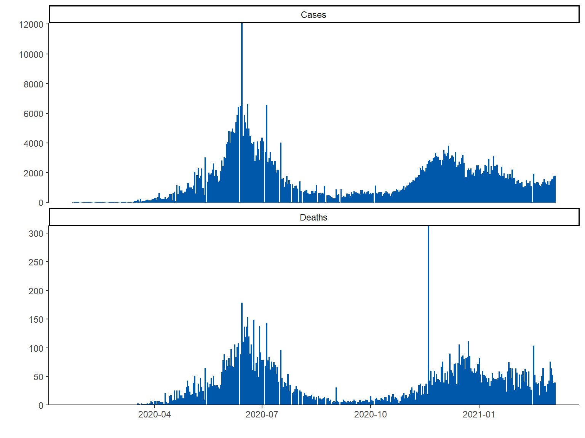

Cases and deaths from JHU and MPIDR datasets
Source of data
Johns Hopkins University (JHU) data refer to the daily-updated data used for their dashboard. The dataset was downloaded from the project page.
COVerAGE-DB, led by the Max Planck Institute, is an open-access database including cumulative counts of confirmed COVID-19 cases, deaths, and tests by age and sex. Original data and sources are provided alongside data and measures in standardized and age-harmonized formats. The data were extracted from reports published by official governmental institutions in a variety of formats. The project page and the medRxiv paper contain the technical details. The database is still in development. Today it includes 120 countries and 370 subnational areas.
Pakistan
Data from Johns Hopkins University
Last updated on 2021-03-06 04:23:41
Figure 1. Daily cases and deaths from Johns Hopkins University

Data from COVerAGE-DB
The COVerAGE-DB dataset for Pakistan was most recently updated on 2020-05-31
Table 1.a. The cases and deaths reported by Johns Hopkins University (JHU) and extracted from the COVerAGE-DB database. The fourth column (COVerAGE-DB/JHU) shows the ratio of case and death counts from COVerAGE-DB to those reported by JHU. The harmonized data of age groups 0-4, 5-9, 10-14, 15-19 are listed in the table. Their counts sum to age group 0-19 and the percentage values show this age group’s proportion in all age groups.
| Country | Measure | JHU | COVerAGE-DB/JHU(%) | Age 0-4 | Age 5-9 | Age 10-14 | Age 15-19 | Age 0-19 |
|---|---|---|---|---|---|---|---|---|
| Pakistan | Cases | 588728 | 14 | NA | NA | 741 | 5502 | 6,243 (8%) |
| Pakistan | Deaths | 13166 | 13 | NA | NA | 4 | 9 | 13 (0.8%) |
| Country | Measure | Sex | COVerAGE-DB/JHU(%) | Age 0-4 | Age 5-9 | Age 10-14 | Age 15-19 | Age 0-19 |
|---|---|---|---|---|---|---|---|---|
| Pakistan | Cases | Both | 14 | NA | NA | 741 | 5502 | 6,243 (8%) |
| Pakistan | Deaths | Both | 13 | NA | NA | 4 | 9 | 13 (0.8%) |
Figure 2. Age distribution of COVID-19 cases, deaths and case fatality rate (CFR), with 5-year age interval. CFR is calculated by dividing death counts by case counts for each age group.

Reference
Dong E, Du H, Gardner L. An interactive web-based dashboard to track COVID-19 in real time. Lancet Inf Dis. 20(5):533-534. https://doi.org/10.1016/S1473-3099(20)30120-1
Riffe, T., Acosta, E., and The COVerAGE-DB team (2020). COVerAGE-DB: A database of COVID-19 cases and deaths by age. medRxiv https://doi.org/10.1101/2020.09.18.20197228